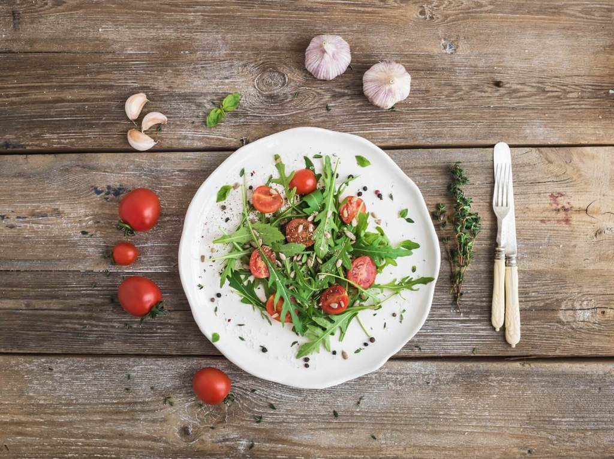

Salads .February 10,2019
WP Recipe Maker Example
Difficulty Easy | 0 Comments
This is an example of affiliate disclosure. You can add your own text here or remove it completely #sponsoredpost.
This is some dummy copy. You’re not really supposed to read this dummy copy, it is just a place holder for people who need some type to visualize what the actual copy might look like if it were real content.

If you want to read, I might suggest a good book, perhaps Hemingway or Melville. That’s why they call it, the dummy copy. This, of course, is not the real copy for this entry. Rest assured, the words will expand the concept. With clarity. Conviction. And a little wit.
WP Recipe Maker Demo:
WP Recipe Makeris afree WordPress plugin that can be used in Gormandto create Recipe Cards

Salad with Arugula & Cherry Tomatoes
Ingredients----------
- 1 pint cherry tomatoes, halved.
- Salt and freshly ground black pepper.
- 1/2 tbsp sugar
- 1 tbsp lemon juice
- 1 tbsp red wine vinegar
- 4 tbsp extra-virgin olive oil
- 2 ounces shaved Parmesan
Instructions-------------
- Put the halved tomatoes, chopped arugula, diced red onion, basil leaves, and avocado chunks into a large mixing bowl.
- In a small bowl, whisk the vinegar, olive oil, maple syrup, garlic, Italian seasonings, salt, pepper, and lemon juice until well combined. Pour the dressing over the tomato salad. Gently mix the salad until the dressing has been evenly distributed. Garnish with fresh basil.
Notes
You can prep the dressing early if you want to, just wait until right before you serve the tomato salad to dress it.